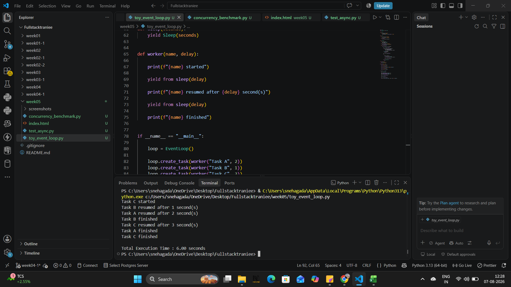
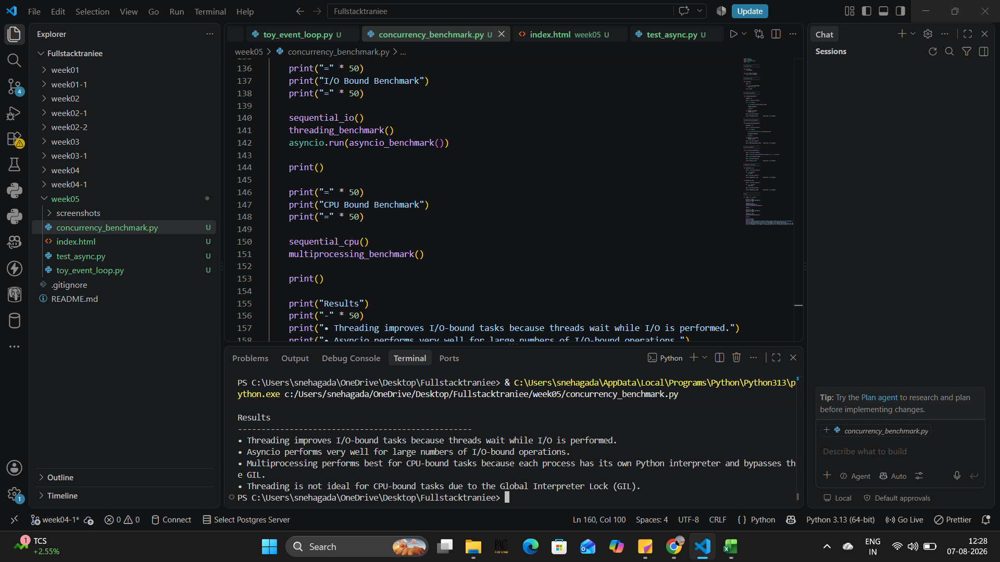
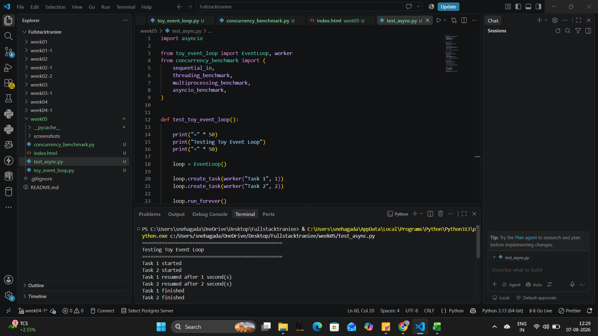

This assignment focuses on understanding Python concurrency by implementing a simplified custom event loop and comparing Threading, Multiprocessing, and Asyncio for both I/O-bound and CPU-bound tasks.
Implemented a simplified custom coroutine scheduler using Python generators to understand how asyncio works internally.

Compared Threading, Multiprocessing and Asyncio using I/O-bound and CPU-bound tasks while measuring execution time.

Successfully verified the toy event loop implementation and benchmark execution using test cases.

All execution screenshots are available inside the
screenshots folder.